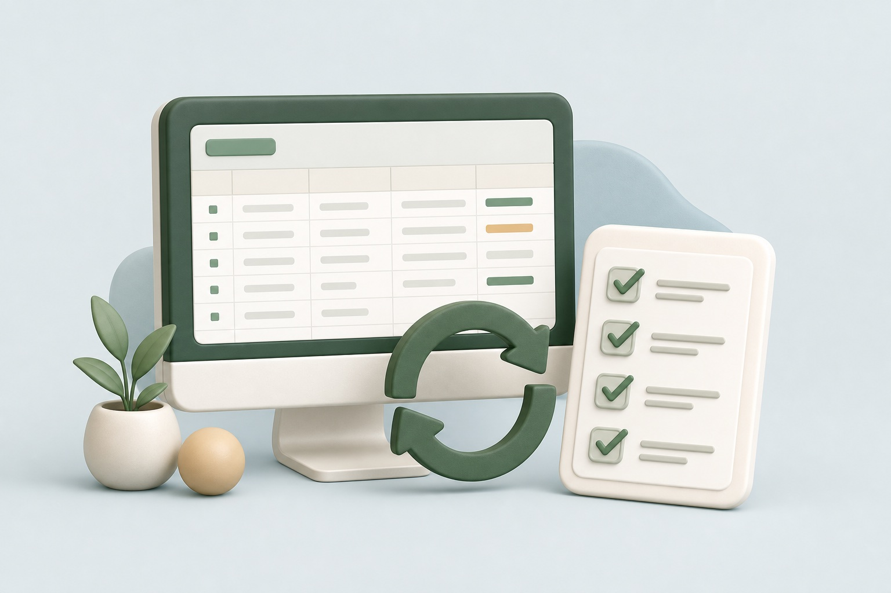
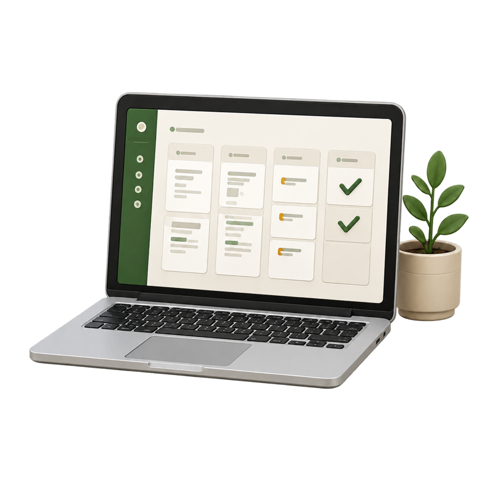
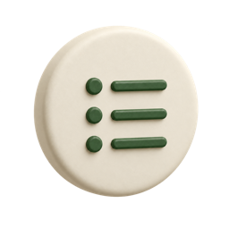
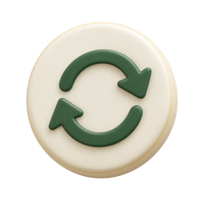

情報が散らばる
顧客や案件の情報が、紙・LINE・表計算などに分かれています。

PROBLEMS
こんな業務に
AIを使うこと自体を目的にせず、負担が大きい作業から確認します。
顧客や案件の情報が、紙・LINE・表計算などに分かれています。
転記や集計に時間がかかり、本来の仕事が後回しになります。
自分の仕事のどこに使えるのか判断できず止まっています。
SCOPE
相談できる業務の例
すべてが完成済みのアプリではなく、業務を確認して必要な形を提案します。
問い合わせ、見積もり、次回連絡日などを一覧で確認します。
タスク、日報、請求・入金、売上、在庫などを整理します。

マニュアル、アンケート、入力フォームなどを使いやすくします。
文章や資料の下書き、情報整理など、確認しながら使える範囲を選びます。
DESIGN
難しい仕組みにしない
機能を増やすことより、今の仕事で無理なく使えることを優先します。
必要な情報と次にすることをひと目で確認

入力や確認の重複を減らしてシンプルに

今の仕事に合わせて無理なく運用
導入の考え方
保存する情報、使う人、必要な権限、外部サービスとの連携、保守の要否を確認します。
FLOW
導入までの流れ
いきなり大きな仕組みに移行せず、負担が大きいところから始めます。
時間がかかる作業や抜け漏れが起きる場面を伺います。
現在使っている道具や情報の動きを確認します。
候補となる画面を実際に見ながら調整します。
機能、料金、保守の範囲に納得してから進めます。
FREE DIAGNOSIS
専門用語ではなく、今のやり方から一緒に整理します。